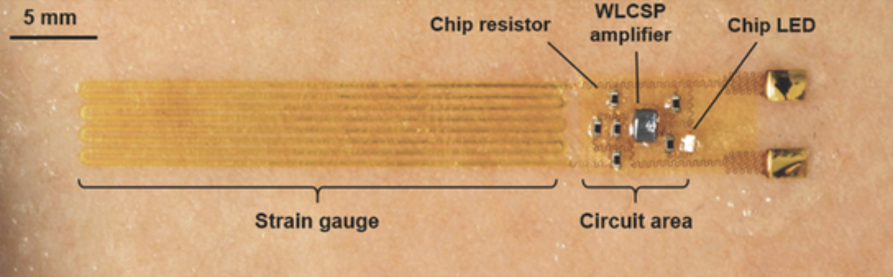

Soft/clothing embedded sensors for continuous monitoring of physiology states
There are many new ways to track human physiology, from watches, straps, and headbands, to rings. One might argue that the LAST thing we need is another gadget to complicate our lives. And yet, it does appear that sensor information is adding value to our experience, allowing us to track our sleep, heart rate, stress level, and resilience, and change our behavior as a result. Why not, then, have those sensors embedded into the clothes we wear, reducing the gadgets that do the measuring for us?
Researchers out of MIT have demonstrated that they can weave the sensors right into the clothes. Initially the focus is on clinical monitoring, but that could easily map to consumer use if comfortable and inexpensive enough. Alternatively, let's skip the garment altogether (!) and go right to the skin surface itself. Electronic skin research efforts are quite mature and seem to be more a matter of engineering implementation and commercialization vs. waiting for a technical breakthrough.
For these technologies the important question is WHEN. Perhaps in the next 5 years we will see some commercial applications.
While there are a few sensor “patches” now available, they are certainly not as elegant as flexible circuitry, however they can provide continuous glucose monitoring for about two weeks. The microneedle/filament interface in these patches allows just enough access to measure glucose levels in real time, without fully penetrating the skin and drawing blood. What’s interesting is that the technology is positioned within diabetics, however many individuals are concerned with tracking blood glucose levels for reasons other than diabetes. This suggests that all monitoring for clinical and home use will likely be moving to patches and disposable solutions in the very near term.